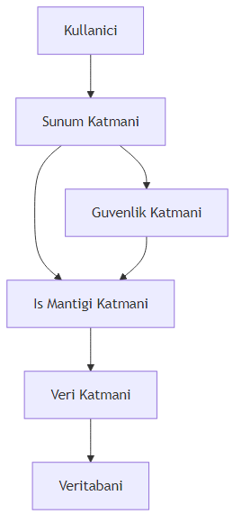
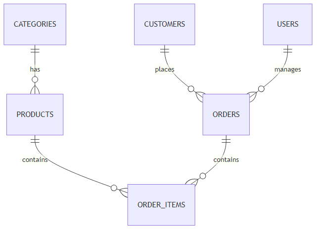

Spring Boot ile Kapsamli Bir Uygulama Gelistirme
2025-01-01
Bu bolumde, ogrendiginiz tum konulari birlestiren kapsamli bir uygulama gelistirme surecini adim adim inceleyeceksiniz. Gercek hayattan bir senaryo uzerinden, Spring Boot ile tam yigin (full-stack) bir uygulama olusturacak, test edecek ve devreye alacaksiniz.
Projemiz, bir “E-Ticaret Yonetim Sistemi” olacak. Bu sistem: - Urun, kategori, musteri ve siparis yonetimi - Kullanici kimlik dogrulama ve yetkilendirme - REST API uzerinden tum islemler - Docker konteynerlerinde calisabilme - CI/CD pipeline ile otomatik test ve deployment
Pedagojik Not: Bu proje, gercek bir is ortaminda karsilasabileceginiz tum zorluklari icermektedir. Her bir katmani anlamak ve dogru sekilde uygulamak, profesyonel yazilim gelistirme becerilerinizi gelistirecektir.
Proje gereksinimleri: - Java 17+ - Spring Boot 3.x - PostgreSQL veritabani - Docker ve Docker Compose - Maven veya Gradle - Git versiyon kontrol sistemi
Kullanacagimiz teknolojiler: - Backend: Spring Boot, Spring Data JPA, Spring Security - Veritabani: PostgreSQL - API Dokumantasyonu: Swagger/OpenAPI - Test: JUnit 5, Mockito, Testcontainers - Konteyner: Docker - CI/CD: GitHub Actions - Monitoring: Prometheus + Grafana
Projemiz, katmanli mimari (layered architecture) kullanacak. Bu mimari, her katmanin belirli bir sorumlulugu olmasi prensibine dayanir.

## 23.6 Katmanli Mimari (Layered Architecture)Katmanli mimari, uygulamayi mantiksal olarak ayirir: 1. Sunum Katmani: REST controller’lar, DTO’lar 2. Is Mantigi Katmani: Servis siniflari, is akislari 3. Veri Katmani: Repository, Entity siniflari 4. Guvenlik Katmani: JWT, Spring Security
Bilesenler arasi iletisim: - Controller -> Servis -> Repository - DTO’lar katmanlar arasi veri transferi icin kullanilir - Exception handling mekanizmasi ile hatalar yonetilir
Veritabani tasarimimiz asagidaki tablolari icerir:
- categories: Kategori bilgileri
- products: Urun bilgileri
- customers: Musteri bilgileri
- orders: Siparis bilgileri
- order_items: Siparis detaylari
- users: Kullanici bilgileri

## 23.10 JPA Entity’leri ve Iliskilerpackage com.eticaret.entity;
import jakarta.persistence.*;
import lombok.Data;
import java.util.Set;
@Entity
@Table(name = "categories")
@Data
public class Category {
@Id
@GeneratedValue(strategy = GenerationType.IDENTITY)
private Long id;
@Column(nullable = false, unique = true)
private String name;
@Column(length = 500)
private String description;
@OneToMany(mappedBy = "category", cascade = CascadeType.ALL, fetch = FetchType.LAZY)
private Set<Product> products;
@Column(name = "created_at")
private LocalDateTime createdAt;
@PrePersist
protected void onCreate() {
createdAt = LocalDateTime.now();
}
}package com.eticaret.repository;
import com.eticaret.entity.Product;
import org.springframework.data.jpa.repository.JpaRepository;
import org.springframework.data.jpa.repository.Query;
import org.springframework.stereotype.Repository;
import java.util.List;
@Repository
public interface ProductRepository extends JpaRepository<Product, Long> {
List<Product> findByCategoryId(Long categoryId);
@Query("SELECT p FROM Product p WHERE p.price BETWEEN :minPrice AND :maxPrice")
List<Product> findByPriceRange(Double minPrice, Double maxPrice);
List<Product> findByNameContainingIgnoreCase(String name);
}Is mantigi katmani, uygulamanin temel islevselligini icerir. Her is akisi bir servis sinifinda tanimlanir.
package com.eticaret.service;
import com.eticaret.dto.OrderDTO;
import com.eticaret.entity.Order;
import com.eticaret.entity.OrderItem;
import com.eticaret.entity.Product;
import com.eticaret.exception.InsufficientStockException;
import com.eticaret.repository.OrderRepository;
import com.eticaret.repository.ProductRepository;
import lombok.RequiredArgsConstructor;
import org.springframework.stereotype.Service;
import org.springframework.transaction.annotation.Transactional;
@Service
@RequiredArgsConstructor
public class OrderService {
private final OrderRepository orderRepository;
private final ProductRepository productRepository;
@Transactional
public OrderDTO createOrder(OrderDTO orderDTO) {
Order order = new Order();
order.setCustomerId(orderDTO.getCustomerId());
double totalAmount = 0.0;
for (OrderItemDTO itemDTO : orderDTO.getItems()) {
Product product = productRepository.findById(itemDTO.getProductId())
.orElseThrow(() -> new RuntimeException("Product not found"));
if (product.getStock() < itemDTO.getQuantity()) {
throw new InsufficientStockException("Insufficient stock for product: " + product.getName());
}
OrderItem item = new OrderItem();
item.setProduct(product);
item.setQuantity(itemDTO.getQuantity());
item.setUnitPrice(product.getPrice());
order.addItem(item);
totalAmount += product.getPrice() * itemDTO.getQuantity();
// Stock update
product.setStock(product.getStock() - itemDTO.getQuantity());
productRepository.save(product);
}
order.setTotalAmount(totalAmount);
order.setStatus(OrderStatus.PENDING);
Order savedOrder = orderRepository.save(order);
return convertToDTO(savedOrder);
}
}Is mantigi katmaninda validation ve exception handling kritik onem tasir.
package com.eticaret.exception;
import org.springframework.http.HttpStatus;
import org.springframework.http.ResponseEntity;
import org.springframework.web.bind.MethodArgumentNotValidException;
import org.springframework.web.bind.annotation.ExceptionHandler;
import org.springframework.web.bind.annotation.RestControllerAdvice;
@RestControllerAdvice
public class GlobalExceptionHandler {
@ExceptionHandler(InsufficientStockException.class)
public ResponseEntity<ErrorResponse> handleInsufficientStock(InsufficientStockException ex) {
ErrorResponse error = new ErrorResponse(
HttpStatus.BAD_REQUEST.value(),
ex.getMessage(),
System.currentTimeMillis()
);
return new ResponseEntity<>(error, HttpStatus.BAD_REQUEST);
}
@ExceptionHandler(MethodArgumentNotValidException.class)
public ResponseEntity<ErrorResponse> handleValidation(MethodArgumentNotValidException ex) {
String message = ex.getBindingResult().getAllErrors().stream()
.map(e -> e.getDefaultMessage())
.collect(Collectors.joining(", "));
ErrorResponse error = new ErrorResponse(
HttpStatus.BAD_REQUEST.value(),
message,
System.currentTimeMillis()
);
return new ResponseEntity<>(error, HttpStatus.BAD_REQUEST);
}
}Transaction yonetimi, veri tutarliligini saglar. @Transactional anotasyonu ile yonetilir.
Onemli Not: Transaction yonetimi, ozellikle birden fazla veritabani islemi iceren is akislarinda kritiktir. Ornegin, siparis olusturma isleminde hem siparis tablosuna ekleme hem de stok guncelleme islemleri ayni transaction icinde yapilmalidir.
REST API tasariminda asagidaki prensiplere uyulur: - Kaynak odakli URL yapisi - HTTP metodlarinin dogru kullanimi (GET, POST, PUT, DELETE) - Status kodlarinin dogru kullanimi
package com.eticaret.controller;
import com.eticaret.dto.ProductDTO;
import com.eticaret.service.ProductService;
import jakarta.validation.Valid;
import lombok.RequiredArgsConstructor;
import org.springframework.http.HttpStatus;
import org.springframework.http.ResponseEntity;
import org.springframework.web.bind.annotation.*;
import java.util.List;
@RestController
@RequestMapping("/api/v1/products")
@RequiredArgsConstructor
public class ProductController {
private final ProductService productService;
@GetMapping
public ResponseEntity<List<ProductDTO>> getAllProducts() {
return ResponseEntity.ok(productService.getAllProducts());
}
@GetMapping("/{id}")
public ResponseEntity<ProductDTO> getProductById(@PathVariable Long id) {
return ResponseEntity.ok(productService.getProductById(id));
}
@PostMapping
public ResponseEntity<ProductDTO> createProduct(@Valid @RequestBody ProductDTO productDTO) {
ProductDTO created = productService.createProduct(productDTO);
return new ResponseEntity<>(created, HttpStatus.CREATED);
}
@PutMapping("/{id}")
public ResponseEntity<ProductDTO> updateProduct(@PathVariable Long id,
@Valid @RequestBody ProductDTO productDTO) {
return ResponseEntity.ok(productService.updateProduct(id, productDTO));
}
@DeleteMapping("/{id}")
public ResponseEntity<Void> deleteProduct(@PathVariable Long id) {
productService.deleteProduct(id);
return ResponseEntity.noContent().build();
}
}Spring Boot ile Swagger dokumantasyonu otomatik olarak eklenir.
package com.eticaret.config;
import com.eticaret.security.JwtAuthenticationFilter;
import lombok.RequiredArgsConstructor;
import org.springframework.context.annotation.Bean;
import org.springframework.context.annotation.Configuration;
import org.springframework.security.config.annotation.web.builders.HttpSecurity;
import org.springframework.security.config.annotation.web.configuration.EnableWebSecurity;
import org.springframework.security.config.http.SessionCreationPolicy;
import org.springframework.security.web.SecurityFilterChain;
import org.springframework.security.web.authentication.UsernamePasswordAuthenticationFilter;
@Configuration
@EnableWebSecurity
@RequiredArgsConstructor
public class SecurityConfig {
private final JwtAuthenticationFilter jwtAuthFilter;
@Bean
public SecurityFilterChain securityFilterChain(HttpSecurity http) throws Exception {
http
.csrf(csrf -> csrf.disable())
.sessionManagement(session -> session.sessionCreationPolicy(SessionCreationPolicy.STATELESS))
.authorizeHttpRequests(auth -> auth
.requestMatchers("/api/v1/auth/**").permitAll()
.requestMatchers("/api/v1/products/**").hasAnyRole("USER", "ADMIN")
.requestMatchers("/api/v1/admin/**").hasRole("ADMIN")
.anyRequest().authenticated()
)
.addFilterBefore(jwtAuthFilter, UsernamePasswordAuthenticationFilter.class);
return http.build();
}
}JWT token yonetimi, kullanici kimlik dogrulamasi icin kullanilir.
Role-based yetkilendirme ile farkli kullanici rollerine farkli yetkiler verilir.
package com.eticaret.service;
import com.eticaret.dto.ProductDTO;
import com.eticaret.entity.Product;
import com.eticaret.repository.ProductRepository;
import org.junit.jupiter.api.BeforeEach;
import org.junit.jupiter.api.Test;
import org.junit.jupiter.api.extension.ExtendWith;
import org.mockito.InjectMocks;
import org.mockito.Mock;
import org.mockito.junit.jupiter.MockitoExtension;
import static org.mockito.ArgumentMatchers.any;
import static org.mockito.Mockito.when;
import static org.assertj.core.api.Assertions.assertThat;
@ExtendWith(MockitoExtension.class)
class ProductServiceTest {
@Mock
private ProductRepository productRepository;
@InjectMocks
private ProductService productService;
private Product product;
private ProductDTO productDTO;
@BeforeEach
void setUp() {
product = new Product();
product.setId(1L);
product.setName("Test Product");
product.setPrice(100.0);
productDTO = new ProductDTO();
productDTO.setName("Test Product");
productDTO.setPrice(100.0);
}
@Test
void createProduct_ShouldReturnProductDTO() {
when(productRepository.save(any(Product.class))).thenReturn(product);
ProductDTO result = productService.createProduct(productDTO);
assertThat(result).isNotNull();
assertThat(result.getName()).isEqualTo("Test Product");
}
}Integration testler, uygulamanin tum bilesenlerini birlikte test eder.
Test coverage raporlari icin JaCoCo kullanilir.
FROM openjdk:17-jdk-slim AS build
WORKDIR /app
COPY mvnw pom.xml ./
COPY .mvn .mvn
RUN ./mvnw dependency:go-offline
COPY src ./src
RUN ./mvnw clean package -DskipTests
FROM openjdk:17-jdk-slim
WORKDIR /app
COPY --from=build /app/target/*.jar app.jar
EXPOSE 8080
ENTRYPOINT ["java", "-jar", "app.jar"]name: CI/CD Pipeline
on:
push:
branches: [ main ]
pull_request:
branches: [ main ]
jobs:
build:
runs-on: ubuntu-latest
steps:
- uses: actions/checkout@v3
- name: Set up JDK 17
uses: actions/setup-java@v3
with:
java-version: '17'
distribution: 'temurin'
- name: Build with Maven
run: mvn clean package
- name: Run tests
run: mvn test
- name: Build Docker image
run: docker build -t e-ticaret-app .
- name: Push to Docker Hub
uses: docker/build-push-action@v2
with:
push: true
tags: user/e-ticaret-app:latestCloud deployment icin AWS Elastic Beanstalk veya Azure App Service kullanilabilir.
Log yonetimi icin Logback yapilandirmasi ve ELK stack kullanimi.
management:
endpoints:
web:
exposure:
include: health,info,metrics,prometheus
metrics:
export:
prometheus:
enabled: truePerformans optimizasyonu icin: - Lazy loading kullanimi - Cache mekanizmasi (Redis) - Index yonetimi - Connection pool ayarlari
Proje teslimi icin: - Kaynak kod (GitHub reposu) - Docker imaji - API dokumantasyonu (Swagger) - Deployment kilavuzu - Test raporlari
Gelecekteki gelistirmeler: - Mikroservis mimarisine gecis - Event-driven mimari - GraphQL API ekleme - Mobile uygulama entegrasyonu
Bu bolumde, ogrendiginiz tum konulari birlestiren kapsamli bir uygulama gelistirme surecini incelediniz. Katmanli mimari, veri katmani, is mantigi katmani, sunum katmani, guvenlik, test, deployment ve monitoring konularini kapsayan bir E-Ticaret Yonetim Sistemi projesi olusturdunuz.
| Terim | Aciklama |
|---|---|
| DTO | Data Transfer Object, katmanlar arasi veri transferi icin kullanilan nesne |
| JWT | JSON Web Token, kullanici kimlik dogrulamasi icin kullanilan token |
| CI/CD | Continuous Integration/Continuous Deployment, surekli entegrasyon ve teslimat |
| ORM | Object-Relational Mapping, nesne-iliskisel esleme |
| REST | Representational State Transfer, API tasarim mimarisi |
Entity Olusturma: OrderItem entity’sini olusturun ve Order ile iliskisini tanimlayin.
Servis Gelistirme: Yeni bir DiscountService servisi olusturun ve belirli kosullarda indirim uygulayin.
Test Yazma: OrderService icin bir unit test yazin ve transaction yonetimini test edin.
Docker Compose: PostgreSQL ve uygulama icin bir Docker Compose dosyasi olusturun.
API Dokumantasyonu: Swagger konfigurasyonunu ekleyin ve API dokumantasyonunu olusturun.
Pedagojik Not: Bu alistirmalari tamamladiktan sonra, butunlesik uygulama gelistirme konusunda kendinizi daha yetkin hissedeceksiniz. Her bir alistirma, gercek hayattaki bir problemi cozmenize yardimci olacaktir.